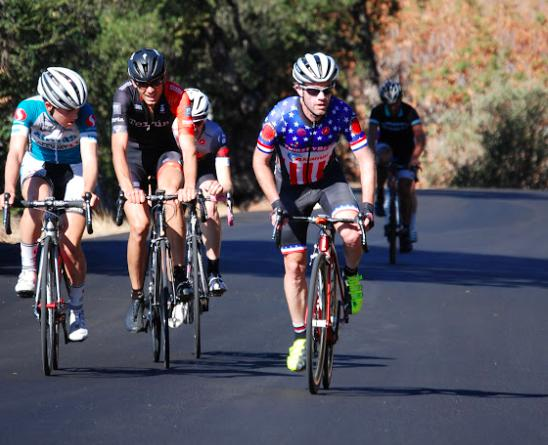

|  |
| The lead group still together late in the climb (Wink Saville) |
Week 1 opened this year's series with perfect if slightly warm weather and fresh tarmac on much of Montebello Road. After a pause to remember our friend and former Low-Keyer Allen Brumm and to wish the best to Low-Keyer Mark King (who's currently recovering from health problems), the climb begain in the usual way, with pacing by the timing car to the base of the climb, a honk of the horn, then game on! Actually this year there was a small hiccup as a bystander, riding slowly on his bike, entered the climb exactly when Low-Key 1 was turning there to start the fun. But soon everyone was safely on their way.
But what happened next was hardly usual. Instead of the typical blistering leg-ripping pace straight from the horn, the front group stayed together at a relatively sustainable pace through the first two miles at 9% grade, then along the mile-long gradual 3% grade. It wasn't until the final third of the climb that it truly blew apart, with Chris Phipps emerging as the first conventional bike to cross the line, followed by Safeway-Airgas rider and ex-Low-Key junior Tim Aiken. Stefano Profumo, last year's overall champion, wasn't far behind the lead two, then Jacob Berkman and Bill Laddish. The top 5 all finished within 37 seconds, a testiment to how late the decision was made on this climb.
In the women's race Amy Cameron showed her race-honed fitness with an excellent time of 32:19, the fourth best women's time in Low-Key history. Multi-time Low-Key champion Janet Gardner showed she has excellent form by placing a second, less than a minute back, while LGBRC's Amber Auer, Low-Key newbie, was third. Another Low-Key first-timer, Sindy Cho rode a very solid fourth with Chris Davis of LGBRC fifth. Indeed LGBRC stacked the women's standings, finishing 3rd, 5th-7th, and 9th. There were a solid 14 women at the climb today.
On the junior side, 14-year-old Aidan McNeil impressed all with his sprint finish to a time of 34:30, taking 6 minutes out of his PR. 16-year-old Andrew Perry also produced a fantastic ride. Watch out for Aidan and Andrew in the next few years. Aidan also leads the week's age adjusted rankings for male riders. Mary Ellen Allen led the women with her very strong ride.
It was a strong tandem week for Low-Key, with three tandems, two mixed and one all-male, climbing the hill. Pauls Chuck and McKenzie were the first to the top in 35:31, but Emma and Jonathan Dixon were the top scorers with their mixed-tandem result of 37:39. The Taylors, Ellen and Stuart, were a solid third.
In the hybrid-electric division it was all about Carol Ordemann. Carol was on a mission -- a mission to beat her son-in-law David Collet, intentionally starting at the back of the field so she'd be able to pass him on the road. And she did: passing not just David but everyone else in the field, to ride home in 23:27.
There were two runners this week: John Burton and Lisa Penzel, each producing impressive times to establish the early series leads in their respective divisions.
New team Stanford and Sons moved themselves to first in the Low-Key standings with 1st, 7th, and 8th in the men's standings while 2nd place team Sisters and Misters of No Mercy did the job with 1st, 2nd, and 8th in the women's standings. LGBRC, the third team today, did so with an overwhelming show of force, 25 riders to put itself as the third overall team and the 1st, by an overwhelming margin, in the mega-team ranking.
Super thanks to all of our great volunteers including the snap results team who all did a spectacular job today. And to Mark -- our thoughts are with you and get well.
KOM special mention qualifiers indicated with orange background.
| pl | # | name | team | cat | time | mph | fph | score |
|---|---|---|---|---|---|---|---|---|
| 1 | 36 | Amy Cameron | Sr's & Mr's of No Mercy | 35+ | 32:19 | 9.84 | 3601 | 126.24 |
| 2 | 8 | Janet Gardner | Sr's & Mr's of No Mercy | 45+ | 33:16 | 9.55 | 3497 | 122.61 |
| 3 | 24 | Amber Auer | LGBRC | 40+ | 33:46 | 9.41 | 3446 | 120.81 |
| 4 | 43 | Sindy Cho | Low-Key | Just Make It To The Top | 34:35 | 9.19 | 3364 | 117.96 |
| 5 | 49 | Christina Davis | LGBRC | 4 | 35:34 | 8.94 | 3272 | 114.72 |
| 6 | 17 | Lynn Sestak | LGBRC | 55+ | 35:55 | 8.85 | 3241 | 113.63 |
| 7 | 51 | Bonnie Denoyer | LGBRC | 45+ | 36:59 | 8.60 | 3146 | 110.33 |
| 8 | 22 | Mary Ellen Allen | Sr's & Mr's of No Mercy | 50+++ | 38:06 | 8.34 | 3054 | 107.11 |
| 9 | 37 | Kathleen Camp | LGBRC | 30+ | 41:37 | 7.64 | 2797 | 98.10 |
| 10 | 26 | Conny Barton | commute from work | 50+ | 42:51 | 7.42 | 2716 | 95.27 |
| 11 | 145 | Maggi Smeal | Team Hattler | 55+ | 43:10 | 7.36 | 2696 | 94.56 |
| 12 | 76 | Nitzel Hagan | Sr's & Mr's of No Mercy | 35+ | 44:38 | 7.12 | 2607 | 91.46 |
| 13 | 72 | Diana Garbarino | Silicon Valley Triathlon | 45+ | 51:01 | 6.23 | 2281 | 80.05 |
| 14 | 80 | Christine Holmes | Low-Key | 50+ | 54:54 | 5.79 | 2120 | 74.39 |
100 point reference time for division Women = 40:49
| pl | # | name | team | cat | time | mph | fph | score |
|---|---|---|---|---|---|---|---|---|
| 1 | 123 | Chris Phipps | Stanford & Sons | 45+ | 26:44 | 11.89 | 4353 | 126.50 |
| 2 | 21 | Tim Aiken | Airgas-Safeway | Retired | 26:49 | 11.86 | 4340 | 126.13 |
| 3 | 126 | Stefano Profumo | Squadra SF | 35+ | 27:02 | 11.76 | 4305 | 125.12 |
| 4 | 30 | Jacob Berkman | ThirstyBear p/b Akamai | 35+ | 27:05 | 11.73 | 4295 | 124.83 |
| 5 | 90 | Bill Laddish | Team CVC | 45's | 27:21 | 11.62 | 4254 | 123.64 |
| 6 | 149 | Joseph Sullivan | San Jose Bike Club | 35+ | 27:24 | 11.60 | 4247 | 123.42 |
| 7 | 62 | Chris Evans | Stanford & Sons | 35+ | 27:31 | 11.55 | 4229 | 122.92 |
| 8 | 46 | David Collet | Stanford & Sons | 45+ | 28:03 | 11.34 | 4150 | 120.60 |
| 9 | 138 | Kirk Scheibelhut | Sparklemotion | Runner With A Bike | 28:20 | 11.22 | 4107 | 119.36 |
| 10 | 71 | Scott Gammon | Unknown | 6 | 28:44 | 11.07 | 4051 | 117.74 |
| 11 | 108 | Shahram Moatazedi | LGBRC | 40+ | 28:51 | 11.02 | 4034 | 117.24 |
| 12 | 70 | Lyndsey Furtado | Team CVC | 3 | 29:01 | 10.96 | 4010 | 116.55 |
| 13 | 39 | Paul Castonguay | Team Gene | 45+ | 29:16 | 10.86 | 3976 | 115.56 |
| 14 | 130 | Travis Retzer | Jim Retzer Memorial | 3 | 29:24 | 10.81 | 3957 | 115.03 |
| 15 | 142 | Brian Schuster | Squadra SF | 2 | 29:37 | 10.73 | 3929 | 114.22 |
| 16 | 63 | Tommy Evans | Pen Velo/Pomodoro | Warm-Up Before Long Run | 29:44 | 10.69 | 3915 | 113.79 |
| 17 | 47 | Andy Crews | Diablo | 45+ | 29:47 | 10.68 | 3908 | 113.60 |
| 18 | 16 | Joe Fant | LGBRC | 55+ | 30:09 | 10.54 | 3860 | 112.19 |
| 19 | 91 | Stephen Lamm | 40+ | 30:27 | 10.44 | 3821 | 111.06 | |
| 20 | 66 | Klaus Fleischmann | Pen Velo/Pomodoro | 45+ | 30:34 | 10.40 | 3807 | 110.66 |
| 21 | 86 | Joe Karbowski | Team Joe Karbowski | 35+ | 30:43 | 10.35 | 3788 | 110.12 |
| 22 | 153 | Nils Tikkanen | Straggler | Thankful | 30:44 | 10.34 | 3786 | 110.05 |
| 23 | 148 | Todd Studenicka | San Jose Bike Club | 45+ | 30:53 | 10.29 | 3768 | 109.53 |
| 24 | 28 | Jeff Baxter | LGBRC | 45+ | 30:56 | 10.27 | 3761 | 109.33 |
| 25 | 48 | JD Daniels | Jim Retzer Memorial | 40+ | 31:06 | 10.22 | 3742 | 108.78 |
| 26 | 78 | Rich Hill | LGBRC | 50+ | 31:20 | 10.15 | 3714 | 107.96 |
| 27 | 120 | Andrew Perry | LGBRC | Slow Juniors | 31:22 | 10.14 | 3710 | 107.85 |
| 28 | 147 | Daryl Spano | San Jose Bike Club | 45+ | 31:47 | 10.00 | 3661 | 106.43 |
| 29 | 119 | Jim Perreira | San Jose Bike Club | 45+ | 31:50 | 9.99 | 3656 | 106.28 |
| 30 | 84 | Brian Johnston | Summit Bikes | 55+ | 31:52 | 9.98 | 3652 | 106.17 |
| 31 | 88 | Scott Krahn | LGBRC | 30+ | 31:55 | 9.96 | 3647 | 106.01 |
| 32 | 161 | Jordan Williams | Lungs with Legs | Caboose | 31:58 | 9.95 | 3641 | 105.84 |
| 33 | 89 | John L | For Mark | 45+ | 32:15 | 9.86 | 3608 | 104.89 |
| 34 | 12 | Will Von Kaenel | LGBRC | 55+ | 32:20 | 9.83 | 3600 | 104.65 |
| 35 | 20 | Bruno Acklin | Clagnuts | 55+ | 32:32 | 9.77 | 3577 | 104.01 |
| 36 | 38 | Edgar Carvajal | Eden Bicycles | 5 | 32:39 | 9.74 | 3564 | 103.62 |
| 37 | 57 | Sandor Dornbush | 35+ | 32:47 | 9.70 | 3549 | 103.18 | |
| 38 | 97 | Doug MacPherson | Pen Velo/Pomodoro | 40+ | 32:50 | 9.68 | 3545 | 103.06 |
| 39 | 107 | Chris Mickelsen | chris mickelsen | 55+ | 33:12 | 9.57 | 3505 | 101.90 |
| 40 | 67 | Joseph Fong | Team CVC | 4 | 33:29 | 9.50 | 3476 | 101.07 |
| 41 | 150 | Andy Sutterfield | San Jose State University | 25+ | 33:39 | 9.45 | 3457 | 100.53 |
| 42 | 131 | Doug Reynolds | NightRiders | 60+ | 34:11 | 9.30 | 3405 | 99.00 |
| 43 | 95 | Robert Lojek | 5-Ish | 34:11 | 9.30 | 3404 | 98.97 | |
| 44 | 32 | Geoffrey Bower | Dash | 30+ | 34:16 | 9.28 | 3396 | 98.75 |
| 45 | 104 | Greg McNeil | 45+ | 34:27 | 9.23 | 3378 | 98.21 | |
| 46 | 103 | Aidan McNeil | Junior | 34:30 | 9.22 | 3373 | 98.08 | |
| 47 | 116 | Frank Paysen | Chain Reaction | 55+ | 34:32 | 9.20 | 3369 | 97.96 |
| 48 | 69 | Brad Fox | LGBRC | 30+ | 34:38 | 9.18 | 3361 | 97.72 |
| 49 | 132 | Caleb Richardson | Team CVC | 30+ | 34:44 | 9.15 | 3350 | 97.42 |
| 50 | 140 | Daniel Schroeder | OLH PR ~20min | 34:46 | 9.14 | 3347 | 97.31 | |
| 51 | 82 | Tim Irvine | LGBRC | 40+ | 35:15 | 9.02 | 3301 | 95.98 |
| 52 | 118 | Ramon Periquet | Team CVC | 50+ | 35:22 | 8.99 | 3290 | 95.67 |
| 53 | 129 | Angel Resendez | mustache bros | 25+ | 35:23 | 8.98 | 3289 | 95.62 |
| 54 | 105 | Chris McQueen | 35+ | 35:32 | 8.95 | 3274 | 95.21 | |
| 55 | 113 | Bill P | Clagnuts | 6 | 35:42 | 8.90 | 3259 | 94.77 |
| 56 | 83 | Steve Johnson | LGBRC | 50+ | 35:49 | 8.88 | 3250 | 94.49 |
| 57 | 143 | Jeremy Scott | LGBRC | 45+ | 35:52 | 8.86 | 3245 | 94.35 |
| 58 | 64 | Brian Fitzgerald | LGBRC | 50+ | 35:56 | 8.85 | 3238 | 94.16 |
| 59 | 157 | Martin Wegenstein | LGBRC | 65+ | 36:20 | 8.75 | 3203 | 93.14 |
| 60 | 125 | Thomas Preisler | LGBRC | 60+ | 36:28 | 8.72 | 3191 | 92.81 |
| 61 | 160 | Jim Williams | San Jose Bike Club | 65+ | 36:30 | 8.71 | 3188 | 92.70 |
| 62 | 170 | Christoph Erben | LGBRC | 45+ | 36:32 | 8.70 | 3185 | 92.62 |
| 63 | 158 | Han Wen | Grumpy Old Men (GOM) | 45+ | 36:33 | 8.70 | 3184 | 92.58 |
| 64 | 139 | John Schiefer | Shiff's Pace | 35+ | 36:41 | 8.67 | 3173 | 92.26 |
| 65 | 98 | Russell McCrary | Sr's & Mr's of No Mercy | 55+ | 36:41 | 8.67 | 3172 | 92.24 |
| 66 | 156 | Alan Weatherall | San Jose Bike Club | 50+ | 36:42 | 8.66 | 3170 | 92.20 |
| 67 | 35 | Scott Byer | 45+ | 36:44 | 8.66 | 3169 | 92.14 | |
| 68 | 124 | Ryan Powell | Team Joe Karbowski | 35+ | 36:45 | 8.65 | 3167 | 92.09 |
| 69 | 73 | Jon Gauthier | Stanford Cycling | 20+ | 36:46 | 8.65 | 3165 | 92.05 |
| 70 | 31 | Hanno Botha | 40+ | 37:33 | 8.47 | 3099 | 90.13 | |
| 71 | 27 | Terry Barton | Bike to Work | 50+ | 37:35 | 8.46 | 3097 | 90.05 |
| 72 | 41 | Charles Cheung | Sloth Dichotomy | 4 | 37:50 | 8.40 | 3075 | 89.44 |
| 73 | 159 | Carl Werner | LGBRC | 50+ | 37:55 | 8.39 | 3070 | 89.27 |
| 74 | 40 | Hui Chen | Team Cycling Panda | 45+ | 37:57 | 8.38 | 3066 | 89.18 |
| 75 | 171 | Chaunrey Graetzel | LGBRC | 38:22 | 8.29 | 3034 | 88.23 | |
| 76 | 81 | Martin Hyland | Diablo | 55+ | 38:26 | 8.27 | 3028 | 88.06 |
| 77 | 109 | Ilya Moskovko | campbell Bike club | 30+ | 38:32 | 8.25 | 3020 | 87.84 |
| 78 | 85 | Rupesh Kapoor | Slightly Old | 38:45 | 8.20 | 3003 | 87.34 | |
| 79 | 154 | Adam Tow | Grumpy Old Men (GOM) | 40+ | 39:09 | 8.12 | 2973 | 86.46 |
| 80 | 65 | Andrew Fitzhugh | Stanford Cycling | 50+ | 39:15 | 8.10 | 2965 | 86.22 |
| 81 | 77 | Ed Hattler | Team Hattler | 55+ | 39:45 | 8.00 | 2928 | 85.16 |
| 82 | 33 | Nicholas Brummell | Atlas | 50+ And Broken | 39:56 | 7.96 | 2914 | 84.76 |
| 83 | 111 | Matt O'Hara | 40+ | 40:02 | 7.94 | 2907 | 84.56 | |
| 84 | 87 | Larry Klein | Grumpy Old Men (GOM) | 55+ | 40:06 | 7.93 | 2903 | 84.42 |
| 85 | 59 | Frank Drobot | Team Djament | 65+ | 40:14 | 7.90 | 2892 | 84.13 |
| 86 | 136 | Shane Ruggieri | LGBRC | 45+ | 40:25 | 7.87 | 2880 | 83.76 |
| 87 | 68 | Stephen Fong | Team 0 | 0 | 40:40 | 7.82 | 2861 | 83.23 |
| 88 | 52 | Gilles Denoyer | Finisar | 45+ | 40:43 | 7.81 | 2859 | 83.15 |
| 89 | 114 | Dan Pankratz | LGBRC | 40+ | 40:50 | 7.79 | 2850 | 82.91 |
| 90 | 133 | Cory Roay | Pen Velo/Pomodoro | 55+ | 41:02 | 7.75 | 2836 | 82.50 |
| 91 | 106 | Jared Mednick | No team | Just Make It To The Top | 42:08 | 7.54 | 2762 | 80.33 |
| 92 | 29 | Bernard Bell | 55+ | 42:12 | 7.53 | 2758 | 80.21 | |
| 93 | 92 | Garrett Lau | LGBRC | 50+ | 42:25 | 7.49 | 2743 | 79.80 |
| 94 | 53 | Jeffery Deslich | Silicon Valley Triathlon | 55+ | 42:28 | 7.49 | 2740 | 79.71 |
| 95 | 146 | Kevin Smith | LGBRC | 55+ | 42:53 | 7.41 | 2714 | 78.94 |
| 96 | 25 | Christopher Barrett | San Jose Bike Club | 55+ Old Fat And Slow | 43:21 | 7.33 | 2685 | 78.09 |
| 97 | 99 | Andre McCurdy | N/A | 40+ | 44:37 | 7.13 | 2608 | 75.88 |
| 98 | 137 | David Salazar | Stanford Cycling | 25+ | 46:20 | 6.86 | 2511 | 73.07 |
| 99 | 23 | Richard Allen | Sr's & Mr's of No Mercy | 55+ | 46:25 | 6.85 | 2507 | 72.94 |
| 100 | 93 | Scott Lewis | Team Fast for Old Guys | 55+ | 47:47 | 6.65 | 2436 | 70.86 |
| 101 | 162 | Harvey Wolfson | Diablo | 65+ | 50:52 | 6.25 | 2288 | 66.58 |
100 point reference time for division Men = 33:50
| pl | # | name | team | cat | time | mph | fph | score |
|---|---|---|---|---|---|---|---|---|
| 1 | 55 | Emma Dixon | 35+ | 37:39 | 8.45 | 3092 | 99.16 | |
| 56 | Jonathan Dixon | 35+ | ||||||
| 2 | 101 | Paul McKenzie | Sr's & Mr's of No Mercy | 60+ | 35:31 | 8.95 | 3277 | 95.28 |
| 44 | Paul Chuck | Sr's & Mr's of No Mercy | 60+ | |||||
| 3 | 151 | Ellen Taylor | Tandem Team Taylor | Fair Weather Warriors | 44:42 | 7.11 | 2604 | 83.54 |
| 152 | Stuart Taylor | Tandem Team Taylor | 40+ |
| pl | # | name | team | cat | time | mph | fph | score |
|---|---|---|---|---|---|---|---|---|
| 1 | 112 | Carol Ordemann | Stanford & Sons | Hybrid-Electric | 23:27 | 13.56 | 4963 | 83.87 |
100 point reference time for division Hybrid Electric = 19:39
| pl | # | name | team | cat | time | mph | fph | score |
|---|---|---|---|---|---|---|---|---|
| 1 | 34 | John Burton | Quicksilver Running Club | 40+ | 49:23 | 6.44 | 2357 | 87.75 |
100 point reference time for division Male Runner = 43:19
| pl | # | name | team | cat | time | mph | fph | score |
|---|---|---|---|---|---|---|---|---|
| 1 | 117 | Lisa Penzel | Low-Key | 50+ | 51:53 | 6.13 | 2243 | 100.73 |
100 point reference time for division Female Runner = 52:16
| pl | team | score | riders |
|---|---|---|---|
| 1 | Stanford & Sons | 370.02 | Carol Ordemann, Chris Phipps, Chris Evans, David Collet |
| 2 | Sr's & Mr's of No Mercy | 355.96 | Amy Cameron, Janet Gardner, Paul McKenzie, Paul Chuck, Russell McCrary, Mary Ellen Allen, Nitzel Hagan, Richard Allen |
| 3 | LGBRC | 352.76 | Shahram Moatazedi, Joe Fant, Jeff Baxter, Rich Hill, Andrew Perry, Scott Krahn, Will Von Kaenel, Amber Auer, Brad Fox, Tim Irvine, Christina Davis, Steve Johnson, Jeremy Scott, Lynn Sestak, Brian Fitzgerald, Martin Wegenstein, Thomas Preisler, Christoph Erben, Bonnie Denoyer, Carl Werner, Chaunrey Graetzel, Shane Ruggieri, Dan Pankratz, Kathleen Camp, Garrett Lau, Kevin Smith |
| 4 | Team CVC | 341.26 | Bill Laddish, Lyndsey Furtado, Joseph Fong, Caleb Richardson, Ramon Periquet |
| 5 | San Jose Bike Club | 339.37 | Joseph Sullivan, Todd Studenicka, Daryl Spano, Jim Perreira, Jim Williams, Alan Weatherall, Christopher Barrett |
| 6 | Pen Velo/Pomodoro | 327.51 | Tommy Evans, Klaus Fleischmann, Doug MacPherson, Cory Roay |
| 7 | 313.40 | Stephen Lamm, Sandor Dornbush, Robert Lojek, Daniel Schroeder, Chris McQueen, Scott Byer, Emma Dixon, Jonathan Dixon, Rupesh Kapoor | |
| 8 | Low-Key | 293.08 | Sindy Cho, Lisa Penzel, Christine Holmes |
| 9 | Diablo | 268.24 | Andy Crews, Martin Hyland, Harvey Wolfson |
| 10 | Grumpy Old Men (GOM) | 263.47 | Han Wen, Adam Tow, Larry Klein |
| 11 | Stanford Cycling | 251.34 | Jon Gauthier, Andrew Fitzhugh, David Salazar |
| 12 | Squadra SF | 239.34 | Stefano Profumo, Brian Schuster |
| 13 | Jim Retzer Memorial | 223.80 | Travis Retzer, JD Daniels |
| 14 | Team Joe Karbowski | 202.21 | Joe Karbowski, Ryan Powell |
| 15 | Clagnuts | 198.78 | Bruno Acklin, Bill P |
| 16 | Team Hattler | 179.72 | Ed Hattler, Maggi Smeal |
| 17 | Tandem Team Taylor | 167.09 | Ellen Taylor, Stuart Taylor |
| 18 | Silicon Valley Triathlon | 159.76 | Jeffery Deslich, Diana Garbarino |
| 19 | Airgas-Safeway | 126.13 | Tim Aiken |
| 20 | ThirstyBear p/b Akamai | 124.83 | Jacob Berkman |
| 21 | Sparklemotion | 119.36 | Kirk Scheibelhut |
| 22 | Unknown | 117.74 | Scott Gammon |
| 23 | Team Gene | 115.56 | Paul Castonguay |
| 24 | Straggler | 110.05 | Nils Tikkanen |
| 25 | Summit Bikes | 106.17 | Brian Johnston |
| 26 | Lungs with Legs | 105.84 | Jordan Williams |
| 27 | For Mark | 104.89 | John L |
| 28 | Eden Bicycles | 103.62 | Edgar Carvajal |
| 29 | chris mickelsen | 101.90 | Chris Mickelsen |
| 30 | San Jose State University | 100.53 | Andy Sutterfield |
| 31 | NightRiders | 99.00 | Doug Reynolds |
| 32 | Dash | 98.75 | Geoffrey Bower |
| 33 | Chain Reaction | 97.96 | Frank Paysen |
| 34 | mustache bros | 95.62 | Angel Resendez |
| 35 | commute from work | 95.27 | Conny Barton |
| 36 | Shiff's Pace | 92.26 | John Schiefer |
| 37 | Bike to Work | 90.05 | Terry Barton |
| 38 | Sloth Dichotomy | 89.44 | Charles Cheung |
| 39 | Team Cycling Panda | 89.18 | Hui Chen |
| 40 | campbell Bike club | 87.84 | Ilya Moskovko |
| 41 | Quicksilver Running Club | 87.75 | John Burton |
| 42 | Atlas | 84.76 | Nicholas Brummell |
| 43 | Team Djament | 84.13 | Frank Drobot |
| 44 | Team 0 | 83.23 | Stephen Fong |
| 45 | Finisar | 83.15 | Gilles Denoyer |
| 46 | No team | 80.33 | Jared Mednick |
| 47 | N/A | 75.88 | Andre McCurdy |
| 48 | Team Fast for Old Guys | 70.86 | Scott Lewis |